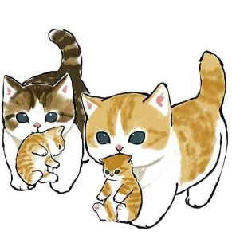

A cute cat is a fluffy and affectionate animal that is often associated with home comfort and warmth.
Cats may be of different breeds, but they all have their own personality and charisma.
If you love cats, then you have the opportunity to get yourself one of them.
Cute cats not only delight the eye with their appearance, but can also become excellent companions for their owners.
They know how to express their emotions and feelings, and can also help in the fight against depression and stress. In addition, cute cats can be a great gift for those who love animals.
However, do not forget that each cat has its own character and habits.
Some may be more active and playful, others more calm and lazy.
Therefore, before getting a cute cat, you need to think carefully and study all its features.
The friendliest cat breeds